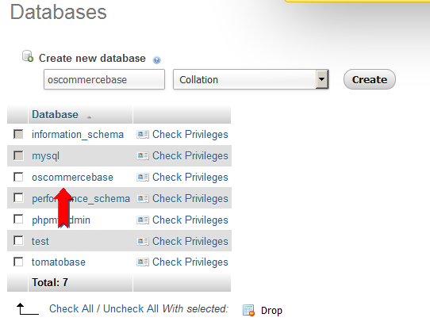
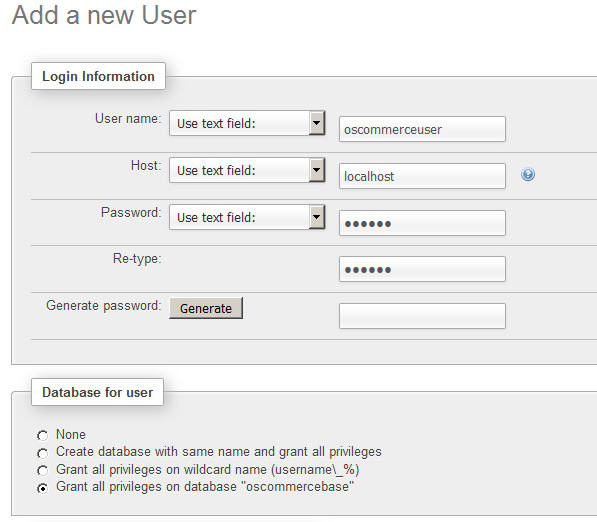
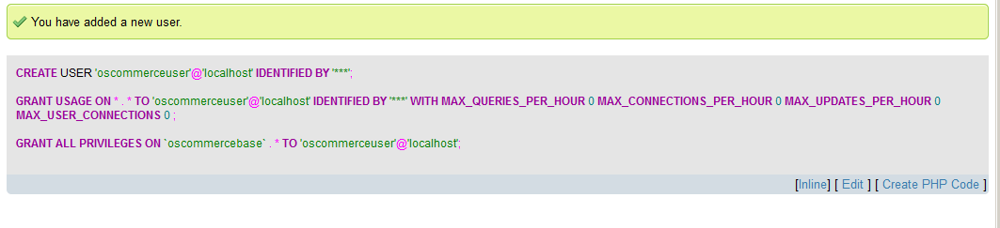
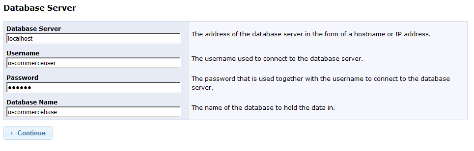
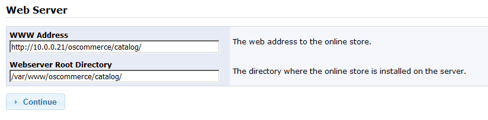
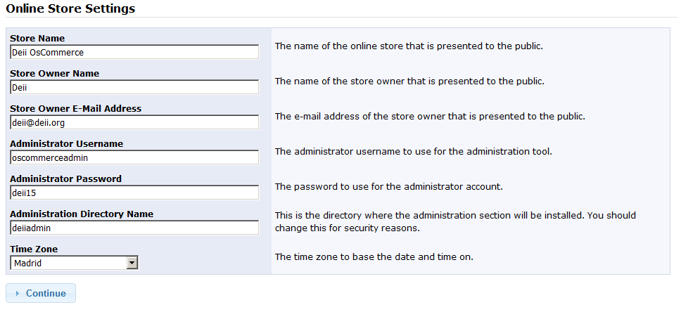
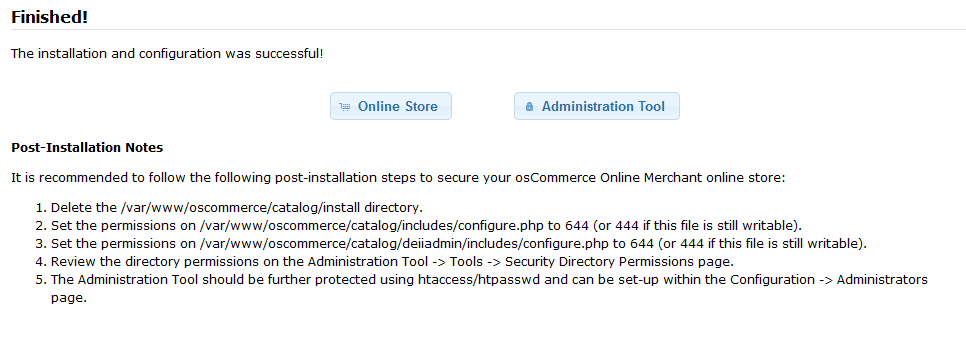
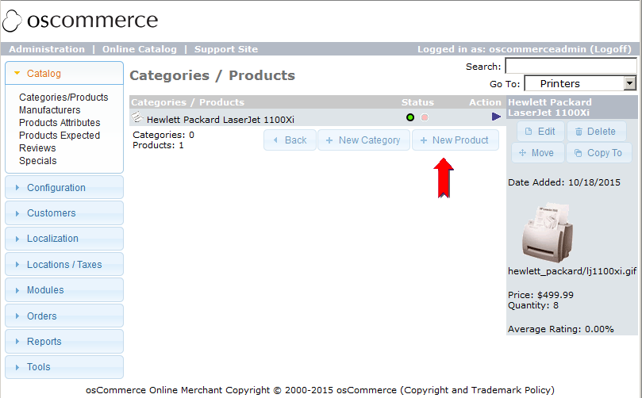
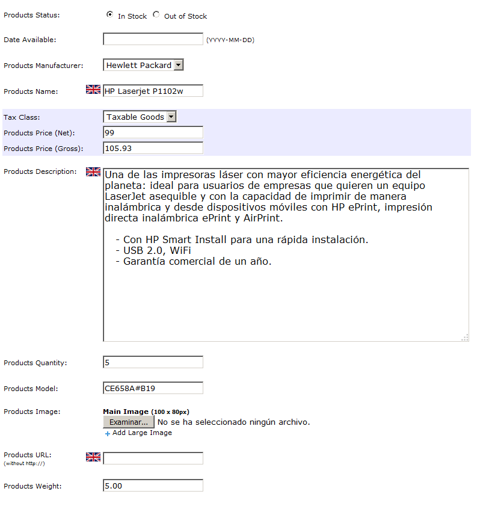
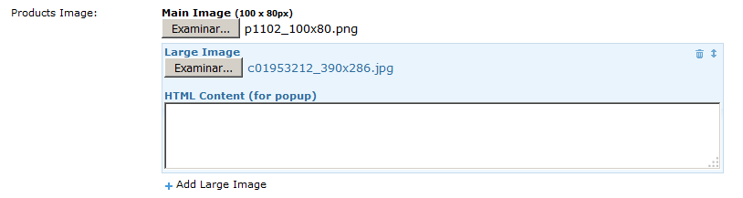

Ejercicio 2 -
Instalación de osCommerce 2 sobre el mismo servidor
El escenario que planteamos como motivación para este
Ejercicio
es el siguiente: usando un único servidor físico
estamos
proporcionando servicios de hosting a dos clientes distintos, uno de
los cuales usa TomatoCart mientras el otro usa osCommerce, y
necesitamos un sistema de desarrollo donde probar sin riesgo los
cambios en configuración y front-ends de las respectivas
tiendas. La solución que usaremos será emplear
VMware
Workstation para, empleando un servidor virtual Debian 7, poder probar
la configuración en el PC con Windows del desarrollador
responsable del sistema.
En este Ejercicio vamos a partir de la máquina Debian 7 con
TomatoCart que hemos obtenido en el Ejercicio 1, sobre la que
instalaremos el sistema de comercio electrónico osCommerce
2.3.4, compartiendo con TomatoCart el mismo motor de base de datos
MySQL, pero usando una base de datos totalmente distinta.
1) Arrancar
la máquina virtual debiantomato,
y hacer login como root.
2) Usando el
cliente SSH Bitwise
Tunnelier y el procedimiento descrito en los puntos 29 a
35 del Ejercicio 1, transferir al directorio /var/www del
servidor el fichero oscommerce-2.3.4.zip,
que estará en el directorio D:\practicas\MV
3) En el
servidor, hacer cd
/var/www, y descomprimir el fichero zip ejecutando unzip oscommerce-2.3.4.zip
.Borrar el fichero zip, y renombrar el directorio oscommerce-2.3.4
ejecutando mv
oscommerce-2.3.4 oscommerce
4) Cambiar
el propietario y grupo de la distribución completa de
osCommerce, ejecutando chown
-R www-data:www-data oscommerce
Ahora crearemos la base de datos necesaria para osCommerce, y el
usuario que emplearemos para conectarnos a ella.
5) En el
Windows 7 abrir Firefox (o una pestaña nueva, si ya
está abierto) y acceder a http:/10.0.0.21/phpmyadmin
.Usando inglés como idioma, hacer login como usuario root
6) Usando el
procedimiento ya descrito en los puntos 41 a 45 del Ejercicio 1, crear
una base de datos llamada oscommercebase,
con un usuario administrador para ella llamado oscommerceuser, y
password deii15,
con permiso para conectar desde localhost.



7) Hacer logout de phpMyAdmin
8) Para instalar osCommerce, accedemos a la URL http://10.0.0.21/oscommerce/catalog
.El propio software de osCommerce detecta que aún no se ha
realizado la instalación, y arranca la página que inicia
el procedimiento. Esta página realiza automáticamente la
comprobación de requerimientos previos, que terminará con
éxito, por lo que seguimos adelante pulsando Start
9) Configuramos el servidor de base de datos, introduciendo en el formulario los valores mostrados en la figura, y pulsamos Continue

10) Dejar con los valores por defecto los directorios del servidor web. Pulsar Continue

11) Configurar los parámetros de la tienda online con los valores mostrados en la figura.

La instalación terminará con éxito, y obtendremos
una lista de recomendaciones de seguridad que, si el servidor estuviera
expuesto a acceso público, DEBEMOS llevar a cabo. En nuestro
caso, sin embargo, sabemos que el servidor (que está corriendo
en una red host-only) sólo puede ser accedido desde nuestro
ordenador, por lo que, de momento, dejaremos para otro momento el
asegurar totalmente el servidor.

12) Pulsando sobre el botón Online Store
se abrirá en una nueva pestaña el front-end
gráfico de la tienda, con los datos por defecto con los que el
instalador la precarga. Por su parte, pulsando sobre el botón Administration Tool
abriremos la página de la herramienta gráfica de
administración, en la que haremos login empleando el usuario oscommerceadmin y el password deii15.
(NOTA: El login inicial puede tardar casi un minuto en completarse,
mientras se inicializan valores en la base de datos y lógica
PHP).
Al arrancar la herramienta administrativa veremos mensajes
recordándonos los agujeros de seguridad que seguimos teniendo.
Siendo conscientes de que, en un sistema en producción,
deberíamos cerrarlos inmediatamente, vamos a modificar el
catálogo de la tienda añadiéndole la misma
impresora HP que hemos incluído en la tienda TomatoCart.
13) Pulsar el botón Catalog. Navegar el árbol de categorías siguiendo la secuencia Categories/Products -> Hardware -> Printers .Veremos que ya existe una impresora HP en el catálogo; añadimos una segunda pulsando el botón New Product

14) Rellenar el formulario con los valores mostrados en la figura. NO pulsar todavía Save

15) Usando el botón Examinar añadir la imagen p1102_100x80.png del directorio D:\practicas\MV\P1102-oscommerce .Pulsando sobre Large Image, añadir la imagen c01953212_390x286.jpg del directorio D:\practicas\MV\P1102

16) Pulsar Save. Refrescar el front-end gráfico de la tienda, y comprobar el resultado.
Siendo conscientes de que no hemos dejado asegurado el servidor (lo que
es aceptable sólo porque estamos en una red host-only), vamos a
dejar aquí la configuración y a sacar una
instantánea del estado actual de la máquina virtual.
17) Hacer Logoff
en la herramienta de administración de osCommerce, y cerrar
todas las pestañas de Firefox que estén accediendo a la
tienda virtual o a su instalador.
18) Apagar la máquina virtual haciendo telinit 0
19) Finalmente, abrir el gestor de instantáneas y crear una instantánea llamada Con Tomatocart y osCommerce.